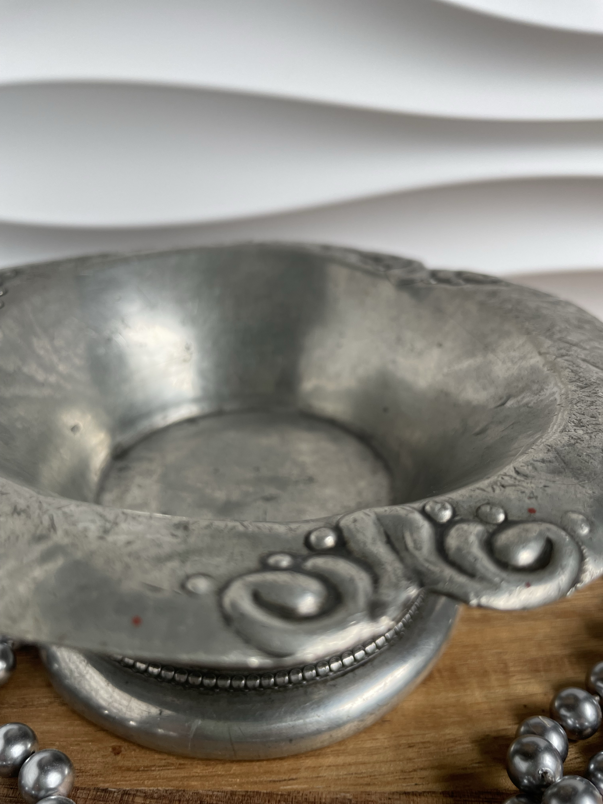
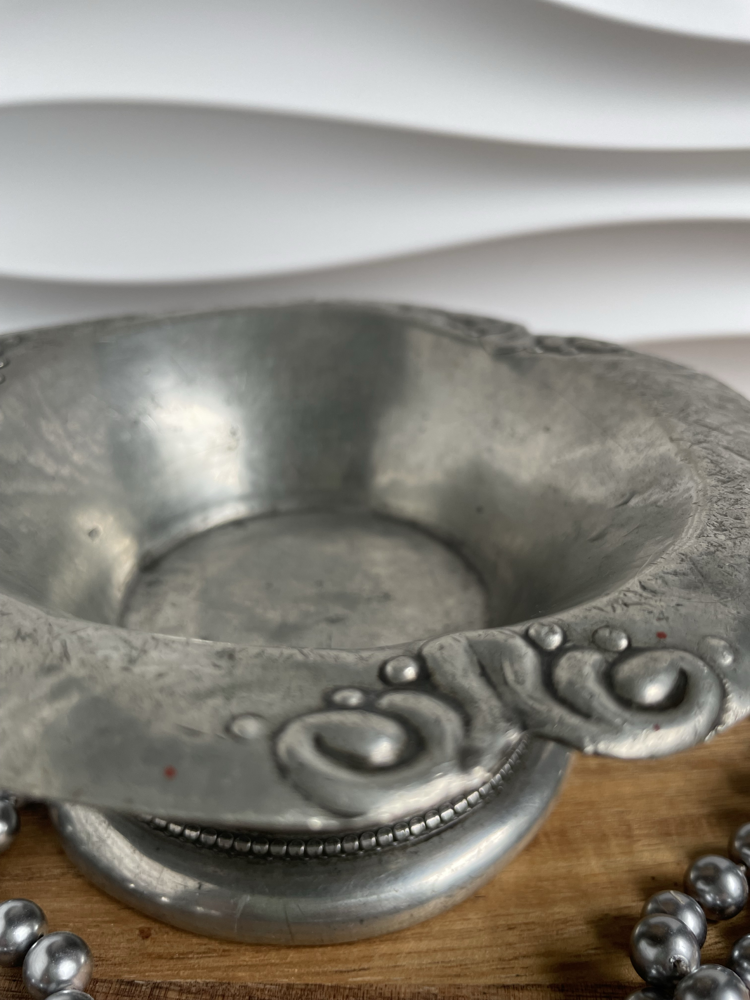
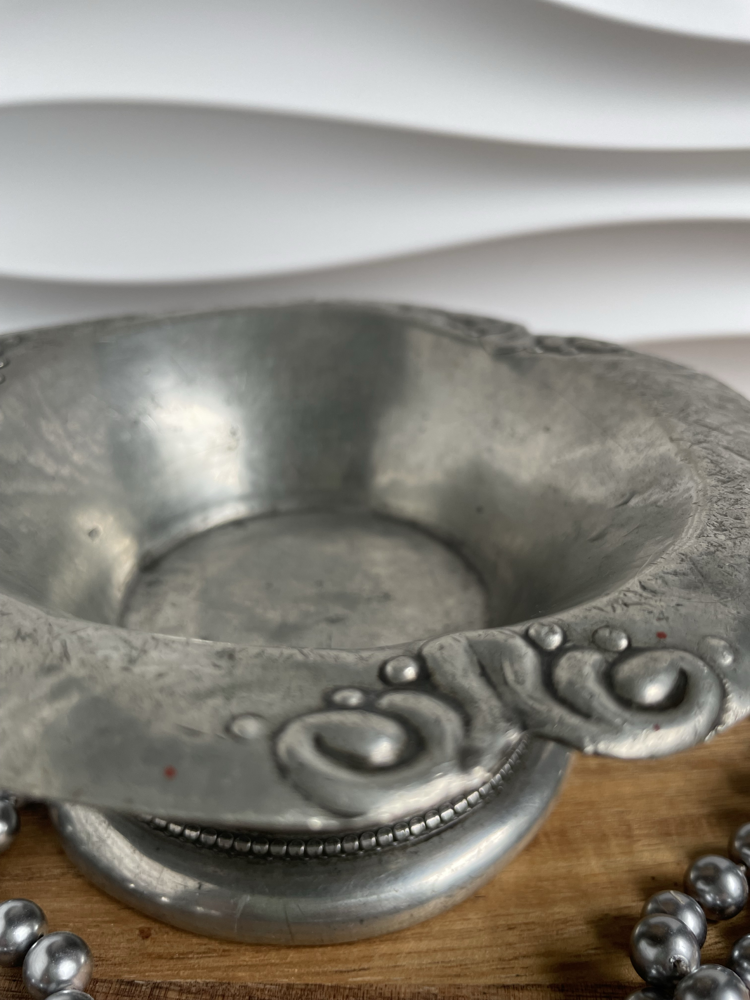
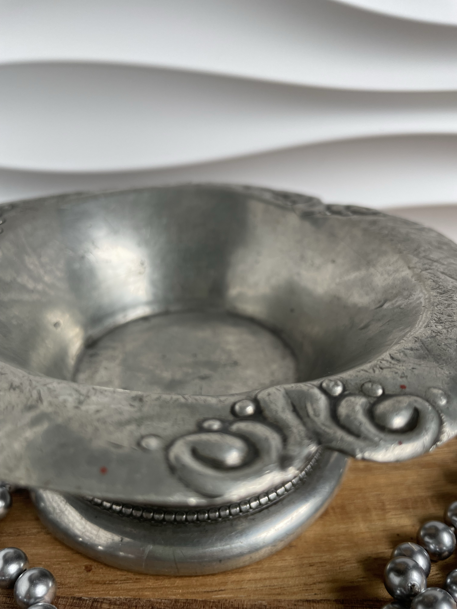
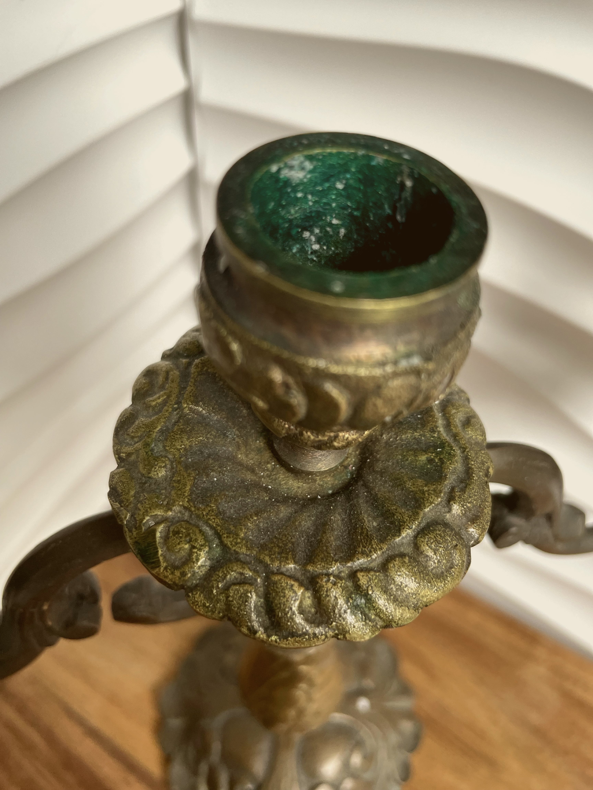
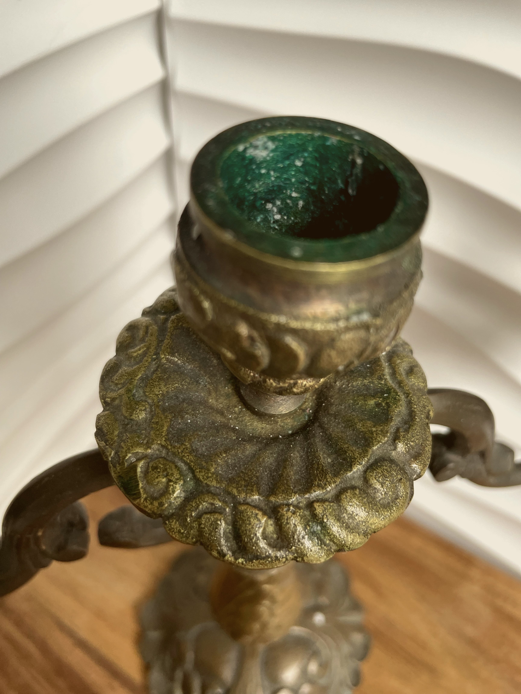

 

€80.00
A charming rustic pewter bowl, showcasing intricate embossed detailing and a beautifully aged patina. Its handcrafted character and subtle imperfections add to its unique charm, making it both a decorative and functional collectible.
Dimensions: 14 × 6 cm
Condition: Excellent, vintage patina consistent with age.
 



€180.00
A striking antique French candelabra, crafted in detailed rustic pewter. With its elegant curved arms and ornate base, this piece exemplifies 19th-century French decorative artistry. Perfect as both a functional candleholder and a statement piece for collectors.
Height: 25 cm
Width: 25 cm
Condition: Excellent, light patina appropriate to age.